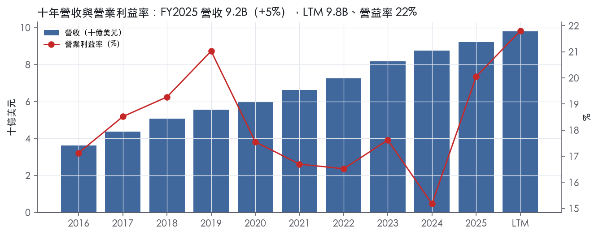
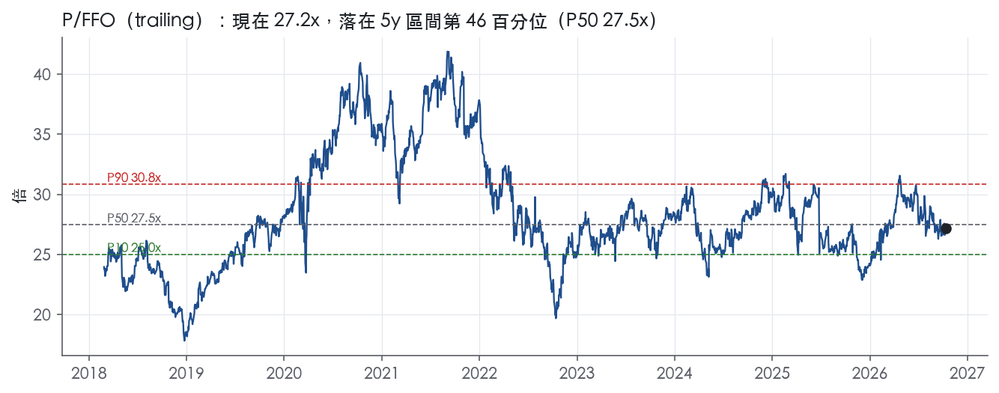
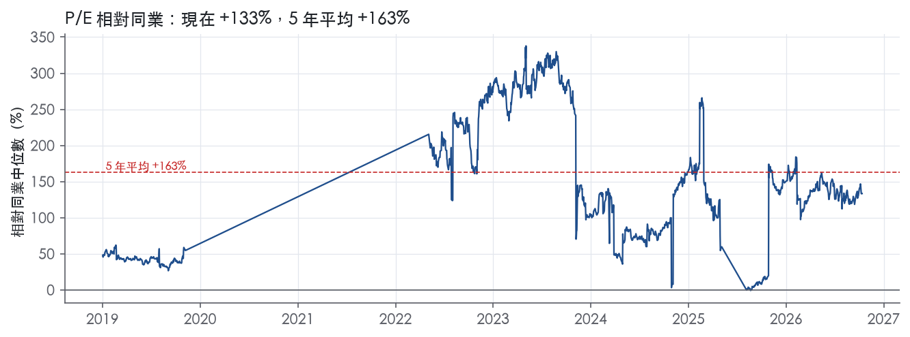
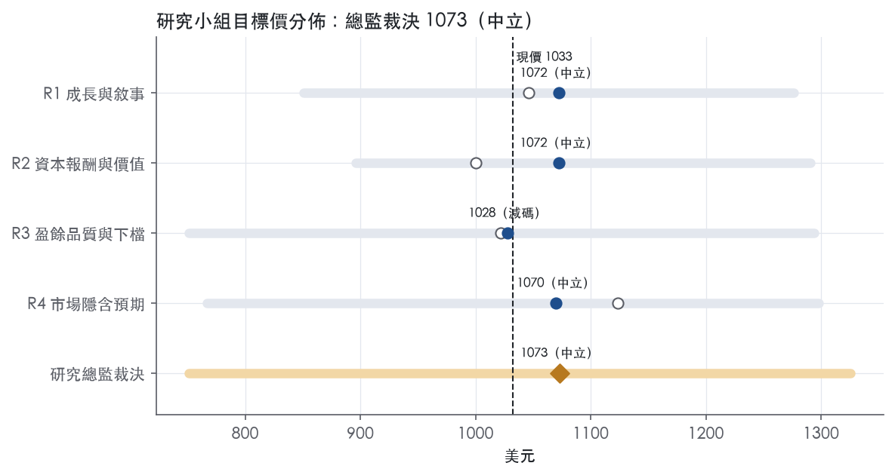
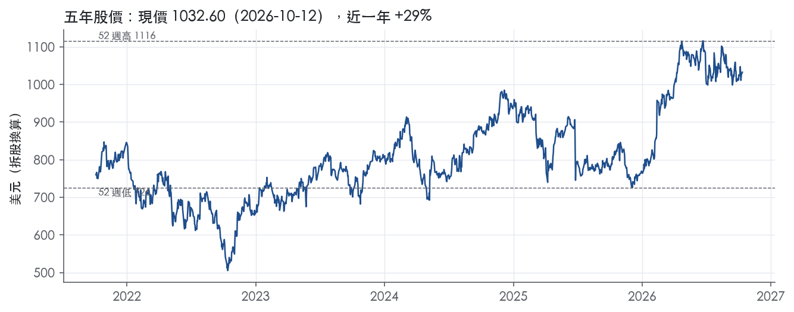

評等總表 › 不動產 › EQIX
盈餘上修撐住現價但跨不過門檻，立場中性｜評等 中立｜目標價 1073
| 評等 | 中立（邊界，鄰近減碼） |
| 12 個月目標價 | 1073 美元 |
| 現價 | 1032.60 美元（2026-10-12） |
| 預期報酬 | 股價 +3.9%＋股息 2.0%＝總報酬 +5.9%；同業籃門檻 10.1%，超額 -4.2% |
| 估值方法 | P/FFO 24.5x，套在第 5–8 季的FFO（也就是一年後的未來四季） |
| 三情境 | 熊 751／基準 1085／牛 1326 |
| 研究流程 | 四位研究員兩輪辯論＋研究總監裁決 |
| 資料來源 | SEC EDGAR XBRL、Tiingo、FRED（全免費） |
盈餘上修撐住現價但跨不過門檻，立場中性（研究總監裁決，四位研究員兩輪辯論後）
評等 中立（邊界，鄰近減碼）｜12 個月目標價 1073 美元（總監三情境機率加權 1075 與研究員中位數 1071 各半）｜現價 1032.60（2026-10-12）
預期報酬：股價 +3.9%＋股息 2.0%＝總報酬 +5.9%。同業籃門檻 10.1%，超額 -4.2%，離減碼的分界不到三個百分點，屬邊界評等（落在其他級距的機率約四成）。
估值方法：P/FFO 24.5x，套在第 5–8 季的FFO（也就是一年後的未來四季）。三情境：熊 751（21%）／基準 1085（54%）／牛 1326（25%）。
什麼會讓研究總監改變看法：Q3 MRR 年增跌破 10% 或 FY2027 指引中點低於 10%，基準成長向 R3 的熊方向修正並提高熊權重；FY2026 利息費用高於 600M 則倍數降到 23.5x。反之 FY2027 指引中點 ≥12%、資本支出落在指引內且 10-K D&A／營收 ≥ 24%，倍數回到 Q5–Q8 口徑市場持平 25.0x、牛機率上調。
| 過去四季（實際，FY2026Q2） | 未來四季 | 第 5–8 季 | 第 9–12 季 | |
|---|---|---|---|---|
| 營收（B） | 9.8B | 10.7B | 11.8B | 12.9B |
| 營收成長 | 9.6% | 9.5% | 10.0% | 9.0% |
| 營業利益率 | 21.8% | 20.8% | 21.0% | 21.3% |
| 每股 FFO（美元） | 38.16 | 40.13 | 44.27 | 48.39 |
| FFO 成長 | 25.4% | 5.2% | 10.3% | 9.3% |
| 每股股息（美元） | 19.70 | 19.70 | 19.70 | 19.70 |
| EPS（美元） | 15.54 | 14.35 | 16.27 | 18.26 |
| P/FFO（現價） | 27.1x | 25.7x | 23.3x | 21.3x |
| 股息殖利率（現價） | 2.0% | 1.9% | 1.9% | 1.9% |
過去四季為申報數字；預測為研究總監的假設、程式計算。倍數與殖利率都用現價計算，用來看現價對應各期獲利的高低。
| 情境 | 機率（歷史） | 故事 | 未來四季營收成長 | 第 5–8 季營益率 | 倍數 | 目標價 | 股價漲跌 |
|---|---|---|---|---|---|---|---|
| 熊 | 21%（18%） | 對應風險表第 1、2 條：新簽約降速而已承諾電力與 6.3B 資本支出無法縮減，固定成本去槓桿加 ATM 稀釋，倍數到前瞻帶 P10 | 7.5% | 18.5% | 19.9x | 751 | -27.2% |
| 基準 | 54%（58%） | MRR 維持約 10% 成長，EBITDA 依指引擴張至 GAAP 約 45%、折舊隨產能投入漸升，新增利息未入模故倍數略低於 Q5–Q8 口徑的市場持平 | 9.5% | 21.0% | 24.5x | 1085 | 5.0% |
| 牛 | 25%（23%） | R2 的驅動：展望上半、2029 年 53%+ 路徑提前兌現、以債不增資；倍數用前瞻帶 P50–P75 的 27.5x，因 AFFO 每股達 9–12% 消化利息、融資疑慮解除 | 11.0% | 23.0% | 27.5x | 1326 | 28.4% |
目標價由程式依研究總監的驅動與倍數計算；機率由研究總監給定。括號內是歷史頻率：把這檔股票過去十年 12 個月報酬的波動形狀，置中在基準情境，結果落在各情境附近的比例。
四位研究員用不同方法各自估值，回應研究總監的質疑後交出第二輪，最後由總監逐點裁決。各研究員的主張見第七章，裁決理由見第八章，完整論證見《研究底稿》。
| 立場（一輪→二輪） | 加權目標價（一輪→二輪） | 評等（一輪→二輪） | 第二輪倍數 | 熊～牛目標價 | |
|---|---|---|---|---|---|
| R1 成長與敘事 | 中性→看空 | 1046→1072 | 減碼→中立 | 27.2x | 851～1276 |
| R2 資本報酬與價值 | 看空→中性 | 1000→1072 | 減碼→中立 | 26.5x | 896～1291 |
| R3 盈餘品質與下檔 | 中性→看空 | 1022→1028 | 減碼→減碼 | 24.5x | 751～1294 |
| R4 市場隱含預期 | 中性→看空 | 1124→1070 | 中立→中立 | 24.5x | 767～1298 |
| 研究總監裁決 | 中性 | 1073 | 中立 | 24.5x | 751～1326 |
目標價由程式依各自的驅動與倍數計算；評等＝機率加權總報酬 − 同業籃門檻。
Equinix 是全球最大的多租戶資料中心（MTDC）與網路互聯服務商，以 REIT 身分運營，核心業務是把企業、雲端服務商、網路服務商連在一起。公司自我定位為「the world's digital infrastructure company」，透過全球 IBX 與 xScale 資料中心網路，結合基礎設施與互聯服務，服務各類數位生態系統客戶¹。客戶群涵蓋電信業者、行動與其他網路服務商、雲端與 IT 服務商、數位媒體與內容商、金融服務公司，以及各產業的全球企業生態系統¹。截至 2025 年 12 月 31 日，公司有超過 10,500 個客戶，無單一客戶佔總營收 10% 以上¹。Equinix 1998 年於德拉瓦州成立，自創立起即堅持網路中立、多租戶模式，27 年來逐步擴張為服務 AI、雲端、企業混合架構的基礎設施平台¹。
公司依地理區劃分為三個可報告分部：Americas、EMEA、Asia-Pacific¹；10-K 未揭露各分部占營收比重的具體數字於 Item 1 正文，分部財務細節列於財報附註 18¹。產品面分兩大類：基礎設施服務（Private Cages、Secure Cabinets、Secure Cabinet Express 及 Smart View、Smart Hands、Smart Build 等支援服務），多以客戶使用的空間與電力計費，產生月經常性收入（MRR）¹；互聯服務（Equinix Fabric、Fabric Cloud Router、Cross Connects、Internet Exchange、Internet Access、Fiber Connect、Metro Connect、Network Edge），多依客戶對外連線數計費，同樣產生 MRR¹。全球資料中心分兩種型態：IBX 是碳中立、多租戶的旗艦型態，服務企業、網路、雲端與 SaaS 商的互聯需求；xScale 則專為超大規模雲端業者的核心工作負載設計，透過合資模式開發與營運¹。截至 2025 年底，公司全球有 280 座資料中心，分布於 77 個都會區、36 個國家，互聯數超過 500,000 個，客戶中含 2,000 多家網路服務商¹。從財務面看，FY2025 營收 9.22B，較 FY2024 的 8.75B成長 5.4%，毛利率由 FY2024 的 48.9% 擴張至 51.1%，營益率由 15.2% 回升至 20.0%，顯示 xScale 一次性費用與定價力對利潤率的拉動效果明顯。
公司以直接銷售團隊搭配通路行銷計畫服務客戶，銷售組織依客戶類型及地理區域劃分，並透過區域辦公室網路提供在地化服務，另設全球客戶服務組織支援¹。公司在 2025 年維持 99.9999%+ 的全球資料中心營運可用率，是其差異化賣點之一¹。地區上，三大分部（美洲、EMEA、亞太）各自獨立核算，員工分布也呈三足鼎立：全球 13,716 名員工中，美洲 5,917 人、EMEA 4,706 人、亞太 3,093 人¹，顯示公司在地化服務能力分散於三大洲，而非集中單一市場。公司主打的差異化優勢是「網路效應」——客戶愈多進駐同一資料中心，愈能吸引其供應商與合作夥伴進駐互聯，形成自我強化的生態圈¹。
FY2025Q3（2025-09-30）營收 2.32B，年增 5.2%，毛利率 50.7%、營益率 20.5%（is/bs 資料包 FY2025Q3）。FY2025Q4（2025-12-31，推導）營收 2.42B，年增 7.0%，但營益率降至 17.4%，EPS 降至 2.70（資料包 FY2025Q4）。FY2026Q1（2026-03-31）營收 2.44B，年增 9.8% 轉為雙位數成長，毛利率回升至 51.5%、營益率 23.6%，EPS 4.20（資料包 FY2026Q1）。FY2026Q2（2026-06-30）營收 2.625B，較去年同期增加 16%（以申報基礎與正常化固定匯率基礎皆同），主要受強勁基本面表現及一次性 xScale 費用驅動²。營業利益 665M，年增 35%；歸屬普通股股東淨利 479M，年增 30%；每股淨利 4.83 美元，年增 29%²。調整後 EBITDA 達 1.396B，創紀錄利潤率 53%，較去年同期以申報基礎增加 24%，正常化固定匯率基礎增加 22%²。AFFO 為 1.168B，年增 20%（申報基礎）或 19%（正常化固定匯率基礎），每股 AFFO 11.78 美元，年增 19%（申報基礎）²。公司對第三季 2026 指引：營收 2.525B 至 2.575B，較去年同期成長 9–11%（申報基礎）或 10–12%（正常化固定匯率基礎），調整後 EBITDA 預期 1.275B 至 1.315B，利潤率約 51%²。整季最大看點是月經常性收入（MRR）年增 11%（申報基礎與正常化固定匯率基礎皆同），年化總新簽約（annualized gross bookings）年增 23%，創歷史次高量，單季新增淨互聯數達 9,700 個，創紀錄²。
公司將成長引擎歸納為五項結構性趨勢：全球化規模佈局（280 座資料中心、77 個都會區、36 國）滿足企業對資料主權與低延遲的本地化需求；混合架構需求推動企業將 IT 基礎設施與多元服務商連結；互聯迫切性（Interconnection Imperative），即即時數位支付、供應鏈、AI 推論等工作負載需要低延遲私有連線；AI 作為生態系加速催化劑，帶動模型訓練、推論及代理式連結需求；以及永續與資源效率管理成為智慧基礎設施的關鍵能力¹。CEO Adaire Fox-Martin 表示：「我們交出了非常強勁的第二季，月經常性收入連續第三個季度實現雙位數成長，平台上的新互聯數創紀錄，紀律嚴明的執行帶動了強勁的利潤成長」，並稱公司「獨特定位以服務全球企業的網路、雲端與 AI 基礎設施需求」²。基於更強的需求、加速的新簽約與預售活動、來自承諾容量的更高可視度及穩固定價能力，公司將 2027–2029 年長期展望由營收年成長 7–10% 上修至 10–13%，2029 年調整後 EBITDA 利潤率目標由 52%+ 上修至 53%+，年度資本支出範圍由 3.0B–4.0B 大幅上修至 5.0B–7.0B，AFFO 每股年成長目標由 5–9% 上修至 9–12%²。FY2026 全年指引同步上修：營收由先前 10.144B–10.244B 上修至 10.205B–10.285B，調整後 EBITDA 由 5.165B–5.245B 上修至 5.210B–5.270B，非經常性資本支出（不含 xScale 與不動產收購）由約 3.8B 大幅上修至 4.710B–5.690B，上修金額逾 1.4B，反映公司正加速資本投入以把握 AI 驅動的資料中心需求²。
公司的成長故事本質是「用資本支出大幅上修去追一個比先前假設更陡的 AI 與雲端需求曲線」，這從非經常性資本支出區間幾乎翻倍、長期營收成長目標上修 3 個百分點可以清楚看出。目前 LTM FCF 為 -1.46B，顯示在這波資本支出加速期內，自由現金流將持續承壓，股息與再投資的平衡是觀察重點。本益比處於過去五年低分位（1.8%），市場尚未完全消化長期展望上修後的獲利軌跡，但 EV/Sales 10.2x 仍落在歷史中位數附近，估值並未顯著重估。

Equinix 評為窄護城河。互聯生態系的網路效應與實體部署的轉換成本都有具體證據，但十年 ROIC 只有一年高於資本成本代理值，撐不起「寬」的評級。我們有把握未來 5 年內互聯業務的定價力仍在，但沒有把握 ROIC 能在 10 年以上持續高於資本成本，因為公司正進入資本支出大幅上修的週期。
優勢來源是網路效應為主、轉換成本為輔。無形資產、成本優勢、效率規模在原文中沒有足以支撐評級的證據，不列入。
網路效應：公司在 10-K 中直接描述這個機制。愈多客戶進駐 Equinix，其供應商與合作夥伴就愈有誘因進駐同一資料中心並直接互聯，這種「adjacency」形成網路效應，持續吸引新客戶¹。規模證據包括：超過 10,500 個客戶，其中 2,000 多家為網路服務商；雲端 on-ramp 市占居領先地位；互聯數超過 500,000 個¹。最新動能沒有減弱，FY2026Q2 單季淨新增互聯 9,700 個，創紀錄²。新進者可以蓋出同樣的機房，卻無法在同一都會區複製同等密度的交易對手，這解釋了為何 MTDC 市場「highly fragmented」，Equinix 仍能守住毛利率。
轉換成本：Private Cages 依單一客戶訂製，含 demarcation rack、patch panels 與布線系統；基礎設施服務按固定期限合約計費，產生 MRR¹。Cross Connects 是同一資料中心內兩個客戶之間的點對點纜線¹。客戶若要搬離，不只是搬設備，還得重建與每個合作夥伴的實體互聯，同時承擔停機風險；在 99.9999%+ 營運可用率的基準下，客戶沒有理由冒這個險。
利潤率的穩定度支持護城河主張，ROIC 的水準則與「寬」直接衝突，這正是我們評為窄而非寬的原因。
利潤率穩定：毛利率十年平均 49.1%、標準差 0.9%，區間 47.7%–51.1%；營益率十年平均 18.0%、標準差 1.7%。同期營收成長由最高 20.9% 降到最低 5.4%，利潤率卻沒有跟著崩，代表定價力不依賴高成長。
ROIC 與資本成本的衝突：ROIC 十年平均 6.6%，資本成本代理值 10.2%，平均差 -3.6%；有資料的 9 年中只有 1 年高於資本成本。依評級標準，這組數字不符合寬護城河，嚴格來說連窄都只是勉強過關。
仍維持窄的理由：
風險：FCF 利潤率十年平均僅 0.2%，代表成長幾乎全靠外部資本支撐，報酬率的改善尚未轉成現金。若 FY2026–FY2027 ROIC 回落到資本成本代理值以下，我們會下修為無護城河。
最大的侵蝕來源是公司自己的資本支出加速，其次是超大規模業者自建機房與高利率環境。
目標倍數相對同業應持平，不給護城河溢價。ROIC 只有最近一年高於資本成本代理值，資本支出週期又會壓縮未來報酬，因此不應以寬護城河假設延長高報酬期。若 FY2026–FY2027 ROIC 守在資本成本之上、互聯淨增維持紀錄水準，才有理由改給溢價。
| 指標 | 最新 | 十年平均 | 標準差 | 最低 | 最高 |
|---|---|---|---|---|---|
| ROIC | 13.4% | 6.6% | 2.8% | 4.1% | 13.4% |
| 毛利率 | 51.1% | 49.1% | 0.9% | 47.7% | 51.1% |
| 營業利益率 | 20.0% | 18.0% | 1.7% | 15.2% | 21.0% |
| FCF 利潤率 | -4.3% | 0.2% | 4.4% | -5.5% | 9.4% |
| ROE | 9.8% | 6.1% | 1.8% | 3.8% | 9.8% |
程式計算。資本成本代理值（10 年債＋5%）：10.2%；ROIC 平均減資本成本：-3.6%；ROIC 有資料的 9 年中，高於資本成本 1 年。
EQIX 是 REIT，法定要把應課稅所得全數配發給股東，GAAP 淨利本身不是盈餘品質的問題來源，問題在於自由現金流持續為負、跟不上淨利成長。LTM 自由現金流 -1.46B，但這主要是擴張性資本支出造成，不是應計操縱或收入認列問題。應計比率 LTM -5.9%、近三年 -7.0%、十年平均 -7.3%，全部為負值且落在綠燈區，代表 CFO 長期高於淨利，沒有靠應計灌盈餘的跡象。
營業現金流對淨利的比率在三個時間窗都是綠燈：LTM 2.57x、近三年 3.40x、十年平均 4.89x，顯示淨利本身被現金流充分覆蓋，品質無虞。問題出在自由現金流／淨利：LTM -0.95x、近三年平均僅 0.13x，雙雙落在紅燈區，程式標出紅旗。10-K 揭露 2025 年投資活動用現金年增 2.5B，主因資本支出增加 1.2B、不動產收購增加 657M、企業收購增加 251M³。公司在 2025 年開出 16 座新資料中心、52 個主要開發專案進行中，預計到 2028 年交付 5.5 萬個機柜與 100+MW xScale 容量³。這是成長性資本支出吞噬自由現金流，不是營運現金品質惡化，但估值研究員仍要知道短期內公司不會自由現金流轉正。2025 年營運現金流為 3.91B，較 2024 年的 3.25B 成長 662M（is/），顯示核心收現能力持續走強，但被同期更大的投資支出蓋過³。
公司主要用兩套非 GAAP 指標：Adjusted EBITDA 與 AFFO，兩者都把折舊攤銷、SBC、重組、減損、交易成本加回³。2025 年 Adjusted EBITDA 對淨利的加回項目包括：所得稅 160M、利息收入 -193M、利息費用 527M、折舊攤提及增提 2,066M、股權酬勞 498M、重組及退出費用 33M、減損 68M、交易成本 18M，淨利 1,348M 調整後得出 Adjusted EBITDA 4,530M³。AFFO 從 FFO 2,668M 出發，再加回 SBC 498M、非不動產折舊 568M、攤銷 200M、重組 33M、減損 68M、交易成本 18M，扣除經常性資本支出 284M，得出 AFFO 3,761M³。我認為 SBC 498M 與折舊攤銷是真實經濟成本，不該全加回評估股東價值，但對 REIT 而言折舊確實多數超過實際資產耗損速度，AFFO 扣除經常性資本支出後再評估是業界慣例。重組 33M、減損 68M、交易成本 18M 規模相對小且性質偏一次性，加回合理。8-K 新聞稿同樣沿用 Adjusted EBITDA 與 AFFO 定義，2026Q2 Adjusted EBITDA 達 1.396B、margin 53%，AFFO per share 11.78 美元，年增 19%²，管理層並上調 2026 全年 Adjusted EBITDA guidance 至 5.21–5.27B、AFFO 4.24–4.30B²，顯示公司是以 AFFO 作為股利支付能力與員工獎酬的核心指標³。
淨負債／EBITDA 在 LTM、近三年都是負值（-0.51x、-0.33x），顯示公司現金頭寸高於計息負債、槓桿燈號為綠，但十年平均 2.47x 反映出過去槓桿曾經更高，近期的淨現金狀態部分來自 2025 年發行 4.3B 優先票據與 ATM 增資 99M 的融資活動³。利息保障倍數 LTM 3.76x、近三年 3.33x、十年平均 2.68x 均落在黃燈，低於 8x 的綠燈門檻，但 10-K 顯示利息費用 2025 年增加 70M 主因新發債，且公司資本化了 79M 利息至在建工程³，加上淨負債實質為負，黃燈主要反映營業利益率尚未完全追上快速擴大的負債規模，而非償債能力危機。稀釋股數變動 LTM 0.4%、近三年平均 2.2%，黃燈，低於十年平均 3.7%，公司持續透過 ATM 增資（2025 年再募 99M）融通成長，稀釋是成長期 REIT 常態、非隱藏費用化。股東回饋（股利＋回購）／淨利 LTM 127.7%、三年平均 160.3%，綠燈但超過 100%，這是 REIT 法定全額配息要求所致，公司明確表示 2025 年度配息將等於或超過 REIT 應課稅所得³，不是在用槁本回饋股東掏空公司。資本承諾方面，公司已簽約 18.4B 優先票據本金、6.3B 未入帳資本支出合約承諾，流動性來源為 3.2B 現金及短投、4.0B 未動用循環額度³，資本結構仍有餘裕支撐未來成長支出。
程式標出的唯一紅燈是自由現金流／淨利（LTM -0.95x、近三年平均 0.13x），我判斷這是會計口徑／商業模式造成的假警報，而非真實盈餘品質問題。理由有三：一，應計比率同期為 -5.9%，淨利本身被 CFO 完整支撐，缺口出現在資本支出項，不在收入認列或應收帳款。二，10-K 明確揭露 2025 年資本支出增加 1.2B、不動產收購增加 657M，均為擴張性支出，公司 2026 年指引進一步把非經常性資本支出上調至 4.71–5.69B、全年總資本支出上看 5–6B²，顯示現金流出是管理層主動加碼成長、非被動失血。三，應收帳款成長與營收成長差距僅 +0.1pp（綠燈），排除了應收帳款堆積拉高表面淨利的可能性。因此這個紅旗不應直接對 GAAP 盈餘打折，但對估值師而言代表短中期內公司不會產生正自由現金流，評價模型要用 AFFO 或分階段 FCF 轉正假設、不能假設近兩年有股東可分配的剩餘現金。SBC／營收黃燈（LTM 5.4%，十年平均 4.8%）雖未達紅燈但呈緩步上升趨勢，公司 2025 年 SBC 絕對金額 498M，較 2024 年 462M 增加，我認為這是真實稀釋成本，不應在估值時完全加回。利息保障與稀釋股數的黃燈前文已說明，皆屬成長期融資結構的正常現象，非財報操縱訊號。
估值應以 AFFO／Adjusted EBITDA 作為現金流對比基準，但 SBC 與稀釋股數成長要在模型中視為真實成本單獨扣回，不能照單全收公司定義的非 GAAP 數字。GAAP 淨利可信、應計品質佳，不需要對帳面盈餘本身打大折扣，但自由現金流持續為負意味近兩年不該用 FCF 殖利率估值，應改用 AFFO 殖利率或分階段現金流模型反映資本支出週期。目前淨負債為負、利息保障雖為黃燈但無立即壓力，槓桿不構成限制倍數的理由，惟若 2026–2029 年資本支出指引（年化 5–7B）兌現後舉債規模擴大，利息保障倍數可能進一步承壓，需在敏感性分析中納入。
| 項目 | LTM | 近三年 | 十年 | 燈號 | 規則 |
|---|---|---|---|---|---|
| 營業現金流／淨利 | 2.57x | 3.40x | 4.89x | 綠 | ≥1.00x 綠、<0.80x 紅 |
| 自由現金流／淨利 | -0.95x | 0.13x | -0.04x | 紅 | ≥0.90x 綠、<0.60x 紅 |
| 應計比率（(淨利−CFO)／平均總資產） | -5.9% | -7.0% | -7.3% | 綠 | ≤0.0% 綠、>5.0% 紅 |
| SBC／營收 | 5.4% | 5.2% | 4.8% | 黃 | ≤3.0% 綠、>8.0% 紅 |
| 淨負債／EBITDA | -0.51x | -0.33x | 2.47x | 綠 | ≤1.50x 綠、>3.00x 紅 |
| 利息保障倍數（營業利益／利息） | 3.76x | 3.33x | 2.68x | 黃 | ≥8.00x 綠、<3.00x 紅 |
| 稀釋股數年變動 | 0.4% | 2.2% | 3.7% | 黃 | ≤0.0% 綠、>3.0% 紅 |
| （股利＋回購）／淨利 | 127.7% | 160.3% | 213.7% | 綠 | ≥50.0% 綠、<0.0% 紅 |
| 應收帳款成長 − 營收成長（FY2025） | +0.1pp | — | — | 綠 | ≤5pp 綠、>15pp 紅 |
程式計算；燈號以 LTM（無則近三年平均）判定。
Equinix 最大的風險不是客戶流失或法律訴訟，而是公司自己把資本支出指引在一個季度內上修超過 1.4B 美元去追逐 AI 需求曲線，這種規模的资本支出加速若需求不如預期兌現，會先壓垮自由現金流、再壓垮 ROIC 與估值倍數。
| 風險 | 觸發指標（看什麼數字、在哪裡看） | 對 EPS 的影響方向與粗略幅度 | 未來 12 個月發生機率（高／中／低） | 出處 |
|---|---|---|---|---|
| 1. 資本支出暴增但 AI 需求不如預期兌現，FCF 持續惡化 | 每季 FCF（現金流量表）、非經常性資本支出實際數 vs. guidance（4.710B–5.690B）、年化新簽約（annualized gross bookings）成長率 | 方向：負向；幅度：大（LTM FCF 已為 -1.46B，資本支出guidance單季上修 +1.438B） | 高 | ²；LTM FCF |
| 2. 電力取得受限、成本上升，限制擴張與壓縮毛利 | 每季毛利率（損益表）、新IBX申請/併網進度公告、電力採購合約續約條件 | 方向：負向；幅度：中（公司稱「rising prices for...power...negatively impact our business by increasing our operating costs」） | 高 | 10-K 年報 FY2025 Item 1A（風險因素） |
| 3. 高槳桿下的債務成本與再融資風險 | 總債務（10-Q資產負債表，目前約21.4B）、利息費用（損益表）、信評展望公告、美國十年期公債利率 | 方向：負向；幅度：中（總負債21.4B、股東權益14.2B，利率環境ust10y達5.22%） | 中 | ⁴；利率 |
| 4. 國際營運佔比高，匯率與地緣政治波動侵蝕利潤 | 每季「正常化固定匯率」vs「申報基礎」營收成長差異（財報新聞稿）、海外營收占比（10-K揭露） | 方向：負向；幅度：中（海外營收佔FY2025營收約61%） | 中 | ¹；匯率敏感度² |
| 5. 新產品/AI策略押錯、長銷售週期拖累營收兌現節奏 | 新產品毛利率與churn率（如有揭露）、xScale合資進度公告、年化新簽約與backlog變化 | 方向：負向；幅度：中（公司自承「our predictions about the market may prove inaccurate」） | 中 | 10-K 年報 FY2025 Item 1A（風險因素） |
風險一：資本支出暴增但需求不如預期兌現。 公司在單一季度把非經常性資本支出（不含xScale與不動產收購）指引從約3.8B上修到4.710B–5.690B，上修金額逾1.4B，同時把2027–2029年年度資本支出目標從3.0B–4.0B大幅上修至5.0B–7.0B²。這是用資本去追一個比先前假設更陡的AI需求曲線。目前LTM FCF為-1.46B，資本支出若持續以這個斜率擴張而營收兌現速度放緩，FCF缺口只會擴大，REIT的配息壓力與再融資需求同步上升。監測點是每季實際資本支出是否超出guidance上緣，以及年化新簽約成長率是否維持在本季23%的水準²。
風險二：電力取得受限與成本上升。 公司在10-K明確寫道電力採購成本上升、供應緊張，且AI工作負載的高功率密度需求超過許多舊IBX資料中心的設計電容量⁴。公司必須在資料中心尚未完全營運前就承諾電力採購，增加固定成本且無法轉嫁給客戶⁴。這直接限制擴張速度與壓縮毛利率，是結構性而非一次性風險。監測點是每季毛利率變化與公司揭露的新建案電力到位時程。
風險三：高槳桿下的債務與再融資風險。 截至2025年底，公司總負債約21.4B，股東權益14.2B，現金與短期投資3.2B，另有4.0B循環信用額度⁴。公司明確承認「additional debt may also be incurred to fund future acquisitions」，且在當前利率環境下再融資條件可能不如現有債務優惠⁴。目前美國十年期公債利率為5.22%，處於相對高位，若信評展望轉負或下調，借款成本將進一步上升。監測點是每次債券發行的票面利率與信評機構公告。
風險四：國際營運佔比高，匯率波動侵蝕利潤。 公司2025年約61%的營收來自美國以外地區¹，且面臨數十項國際營運風險，包括匯率波動、資金匯回限制、地緣政治不穩定等⁴。本季財報已多次並列「申報基礎」與「正常化固定匯率基礎」兩套成長率，顯示匯率對結果已有實質影響²。監測點是每季兩套成長率的差距是否擴大。
風險五：新產品與AI策略押錯、長銷售週期。 公司坦承「market news and speculation about the future of AI...have caused volatility in our stock price in the past」，且「we cannot guarantee our investments and predictions will be accurate around AI」⁴。公司過去已終止部分新產品（如Equinix Metal），新產品通常毛利率較低、churn較高⁴。加上客戶決策週期長，若AI基礎設施需求成長不如公司長期展望所假設的10–13%年成長率，營收兌現會明顯落後於已投入的資本。
現價 1032.60 對應 trailing（過去四季）P/FFO 27.1x、EV/EBITDA 23.2x、股息殖利率 2.0%、P/E 66.4x。主要估值倍數 P/FFO 現在 27.2x，落在5 年區間第 46 百分位（P10／P50／P90 = 25.0x／27.5x／30.8x）。

把程式的機械基準預測放到現價下，市場付的前瞻倍數是：P/FFO（未來四季） 26.7x、P/E（未來四季） 68.3x、P/FFO（第 5–8 季） 25.0x、P/E（第 5–8 季） 63.0x。反推 DCF 顯示市價隱含未來五年營收年成長 150.0%（WACC 9.0%、終值成長 3.0%、FCF 利潤率 -14.3%，SBC 不加回）。
| 倍數 | 現在 | 5 年 P10 | 5 年 P50 | 5 年 P90 | 現在分位 | 全期 P50 |
|---|---|---|---|---|---|---|
| P/E | 66.4x | 70.7x | 84.6x | 128.9x | 1.8% | 98.0x |
| EV/EBITDA | 23.3x | 21.5x | 25.3x | 27.9x | 21.7% | 25.0x |
| EV/Sales | 10.2x | 8.4x | 10.3x | 11.4x | 46.7% | 10.3x |
| P/FFO | 27.2x | 25.0x | 27.5x | 30.8x | 45.7% | 27.5x |
trailing 倍數（股價 ÷ 過去四季）；分位以每個交易日計算。
同業籃：AMT, BSTT, BXP, COLD, AHR, APLE（SIC 6798 同業 37 家中，CY2025 營收最接近的 6 家）。評等門檻 10.1%：同業「倍數不變下持有一年」的隱含報酬中位數（＝ FCF 殖利率 ×(1＋g)＋g，g 為 5 年營收年複合成長並夾在 −2%～8%），每家夾在 0～15%、P/E 低於 5 倍視為資料可疑而排除，中位數再限制在 10 年債到 10 年債＋5% 之間；排除：BSTT（隱含報酬算不出來）、COLD（隱含報酬算不出來）。
| 代號 | 市值 | 5 年營收 CAGR | 營益率 | P/FFO | P/E | EV/EBITDA | 淨負債／EBITDA | 隱含報酬 |
|---|---|---|---|---|---|---|---|---|
| EQIX | 101.9B | 9.0% | 21.8% | 27.1x | 66.4x | 23.2x | -0.5x | 9.6% |
| AMT | 85.1B | 5.8% | 44.8% | 15.0x | 25.0x | 17.3x | 5.1x | 10.7% |
| BSTT | 0.5B | 25.6% | 58.1% | — | — | 6.8x | 6.8x | — |
| BXP | 9.5B | 4.7% | — | 8.2x | 32.0x | — | — | 8.0% |
| COLD | 4.0B | 5.5% | -12.5% | 12.1x | — | — | — | — |
| AHR | 10.2B | 16.2% | 19.2% | 26.7x | 76.7x | — | — | 9.4% |
| APLE | 3.8B | 18.6% | 17.9% | 10.4x | 22.1x | 11.7x | 3.3x | 16.2% |
| 同業中位數 | 11.0% | 19.2% | 12.1x | 28.5x | 11.7x | 5.1x | 10.1% |
全部 trailing，程式以各公司 SEC XBRL 與 Tiingo 行情計算；第一列為本檔。
P/E 相對同業中位數：現在 133.3%，過去 1 年平均 133.6%、3 年 114.5%、5 年 163.0%；EV/EBITDA 相對同業中位數：現在 132.8%，過去 1 年平均 134.5%、3 年 128.8%、5 年 —。

事後實現前瞻倍數帶（P/FFO，2018-08-17..2025-08-15）：P10／P50／P90 = 19.9x／25.3x／31.1x。它是每個交易日的股價除以之後四季實際實現的指標；一年後，今天的第 5–8 季正是那時的未來四季，所以這條帶是 12 個月目標價的同口徑倍數。因為用的是事後實際而非當時預期，過去成長超乎預期的公司這條帶會偏低。
程式的機械基準（成長率從過去四季年增率三年收斂到 6%、利潤率持平）用 事後實現前瞻 P/FFO P50 估值得到 1045（1.2%），市場現行前瞻倍數（現價 ÷ 基準 未來四季指標）一年後持平，套在基準 第 5–8 季指標得到 1092。這兩個數字只是參考點，不是本報告的目標價；研究員對這個定價的回應在第七章。
下表是每位研究員第一輪（各自獨立）與第二輪（回應研究總監的質疑後）的結果。目標價全由程式依各自的假設計算。
| 立場（一輪→二輪） | 加權目標價（一輪→二輪） | 評等（一輪→二輪） | 第二輪倍數 | 熊～牛目標價 | |
|---|---|---|---|---|---|
| R1 成長與敘事 | 中性→看空 | 1046→1072 | 減碼→中立 | 27.2x | 851～1276 |
| R2 資本報酬與價值 | 看空→中性 | 1000→1072 | 減碼→中立 | 26.5x | 896～1291 |
| R3 盈餘品質與下檔 | 中性→看空 | 1022→1028 | 減碼→減碼 | 24.5x | 751～1294 |
| R4 市場隱含預期 | 中性→看空 | 1124→1070 | 中立→中立 | 24.5x | 767～1298 |
| 研究總監裁決 | 中性 | 1073 | 中立 | 24.5x | 751～1326 |
目標價由程式依各自的驅動與倍數計算；評等＝機率加權總報酬 − 同業籃門檻。
分歧度：第一輪 加權目標價 1000～1124（區間＝現價的 12%）· 倍數 24.5～27.2x · 立場 中性×3、看空×1；第二輪 加權目標價 1028～1072（區間＝現價的 4%）· 倍數 24.5～27.2x · 立場 看空×3、中性×1。

| 研究員 | 第二輪主張 | 堅持的理由 |
|---|---|---|
| R1 成長與敘事 | 偏空，相對減碼；P/FFO 27.2 倍，與現行倍數持平。 | 營收成長不下修：MRR 連三季雙位數，新簽約年增 23%。 |
| R2 資本報酬與價值 | 中性；P/FFO 26.5 倍，低於五年中位數 27.5 倍。 | 倍數不給高於中位，報酬只靠 FFO 成長加 2.0% 股息。 |
| R3 盈餘品質與下檔 | 偏空；P/FFO 24.5 倍，含息總報酬只有 0.9%。 | 股數年增 2%：現金由 3.66B 降到 0.98B，缺口要靠增資補。 |
| R4 市場隱含預期 | 偏空，相對門檻；P/FFO 24.5 倍，低於市場持平 26.4 倍。 | 市場低估營收：2027 年成長應是 10.5%，不是 7.2%。 |
每位研究員的逐條回應與完整論證見《研究底稿》（EQIX_研究底稿_2026-10-13.docx）。
| 分歧點 | R1 | R2 | R3 | R4 | 什麼資料會分出勝負 |
|---|---|---|---|---|---|
| Q5–Q8 營收成長（rev_growth_y2） | 10.5%：長期展望 10–13% 偏內，MRR 連三季雙位數、新簽約 +23% | 9.0%：成長加速屬實，但只部分採信展望，沒給折扣的獨立證據 | 10.0%：展望下緣；成長靠資本支出買、電力交付是風險 | 10.5%：同 R1，列為最有把握的單一修正 | FY2027 營收成長指引中點（2027 年 2 月）；Q3、Q4 2026 MRR 年增 |
| 營益率／D&A 拆分（op_margin_y2、da_pct_rev） | 21.5%／23.0% | 21.0%／24.5%：EBITDA 依指引擴張，新產能折舊同步上升 | 21.0%／23.0%：一次性 xScale 費用退出 | 22.5%／22.5%：營益率擴張、折舊幾乎不動 | Q3 2026 調整後 EBITDA 利潤率是否約 51%；FY2026 10-K 的 D&A／營收與 GAAP 營益率 |
| 目標倍數與口徑（multiple） | 27.2x@ntm：trailing 持平、略低於 5y P50 | 26.5x@ntm：5y P50 扣資本密度、xScale、資本化利息共 1.0x | 24.5x@q5_q8：前瞻帶偏高、新增利息未入模 | 24.5x@q5_q8：同 R3 加固定電力承諾，低於持平 26.4x | FY2026 10-K 利息費用（對 527M）；FY2026 AFFO 每股是否落在 42.69–43.29 |
| 股數年變動（share_change_pct） | 1.5%：用稀釋代理以債支應的利息 | 1.3%：2025 年 ATM 僅 99M、發債 4.3B | 2.0%：現金由 3.66B 降到 0.98B，缺口靠 ATM | 1.5%：增發略增，利息放倍數 | FY2026 10-K 的 ATM 金額與稀釋股數 |
1. Q5–Q8 營收成長：選 R3 的 10.0%。 四人的 y1 都是 9.5%，分歧在 2027 年之後要不要走進展望區間。R1、R4 的證據（MRR +11%、新簽約 +23%、長期展望由 7–10% 上修至 10–13%²）都是真的，但那份展望是固定匯率、不含併購的口徑，公司 61% 營收在美國以外（風險表第 4 條），電力交付風險被列為「高」（風險表第 2 條）——這兩件事決定展望下緣比區間內更適合當基準。R2 的 9.0% 缺少獨立證據：唯一能核對的紀錄是 FY2026 指引上修到 10.205–10.285B⁵，方向是正的；R3 原本拿先前展望對比 FY2025 的論證已在 Q4 撤回。y3 不進 Q5–Q8 目標價，沿 R3 的 9.0%，反映 2028 年後同業供給同步擴張（風險章「公司沒寫」第 1 條）。
2. 營益率／D&A 拆分：選 R2。 主尺是 P/FFO，FFO 把 D&A 加回，真正決定目標價的是 GAAP EBITDA 路徑。R2 的拆分是唯一同時滿足兩件事的：調整後 EBITDA 利潤率走向 FY2026 約 51%、2029 年 53%+⁵；資本支出／營收由 FY2025 的 46.8%升到基準的 55.1% 時折舊必然上升。R4 把折舊壓在 22.5%、營益率推到 22.5%，正是 R1 在 G3 承認的矛盾——資本支出接近翻倍而 D&A 比率幾乎不動；R3 的組合相對機械基準（LTM）幾乎沒有 EBITDA 擴張，與指引相反。R2 的營益率 20.8–21.3% 也與 FY2025 的 20.0%、一次性 xScale 費用退出後 Q3 EBITDA 利潤率指引低於 Q2 的 53%⁵一致。
3. 目標倍數：own，25.5x 套 Q5–Q8 FFO。 口徑依劇本主尺（ffo@ntm_plus_1），R1、R2 的 trailing 帶配 ntm 不採用。錨不是歷史帶，是市場今天付的前瞻倍數：基準模型的「市場倍數持平」26.4x。往下扣約 1x（假設）只有一個理由，而且是個股因素：基準模型把利息按 LTM 持平，而公司 2027–2029 年每年資本支出 5–7B⁵、2025 年以 4.3B 優先票據對 99M ATM 的比例舉債，那一筆發債已讓利息費用增加 70M³。R3、R4 的 24.5x 不採用：「前瞻帶在減速期偏高」只能證明倍數不該高於帶的 P50，不能證明市場一年後會付得比今天少——今天的倍數是觀察值不是推估值；R4 多扣的那一段是在為固定電力承諾訂價，那是熊情境的機制，不該放進基準；R3 自己把資本化利息 79M 與新增利息 70M 對 4.17B FFO 的影響量化為「小」，卻仍扣到 P50 以下，量級對不上。R1 的持平忽略了利息漏算。R2 的 −1.0x 量級與我最接近，但在 trailing 口徑。相對同業：P/E 溢價 133.3%、低於 5 年平均 163.0%（同業表），護城河章不給溢價，我也不加。沒有人再用 10 年債壓倍數（R3 第一輪的理由已刪）。
4. 股數：選 R2 的 1.3%。 8-K 同時給了 AFFO 成長 13–14% 與每股 AFFO 成長 11–13%，兩者的差距就是公司自己隱含的稀釋速度，與 R2 相符。R3 的 2.0% 假設 ATM 取代發債，但 2025 年的實際比例（4.3B 票據對 99M ATM）與 4.0B 未動用循環額度³都指向相反；R1 用稀釋代理利息成本是傳導錯誤，利息已在第 3 點處理。
被退回的第二輪漂移：無。 R2（+7.3%）與 R4（−4.8%）的移動分別來自我第一輪的 V1 與 E1，附 8-K 指引與 10-K Item 7 證據；R2 撤掉 0.3x 稀釋折價又補上 0.3x 資本化利息折價、合計不變，列為審計項，不退回。
與機械基準不同的驅動：
目標倍數 25.5x P/FFO，horizon 第 5–8 季，與事後實現前瞻帶同口徑：落在 P50 25.3x 與 P75 28.3x 之間、市場持平 26.4x 之下約 1x（假設）。交叉驗證：基準模型三個參考點（前瞻 P50 套 Q5–Q8 1045、trailing 5y P50 套 NTM 1061、持平 1092）都在現價上方，我的倍數位置在前瞻 P50 與持平之間。相對同業不加溢價、不另扣折價。
差在盈餘不在倍數：市場隱含的 Q5–Q8 前瞻倍數 25.0x 是套在「成長三年收斂到 6%、EBITDA 利潤率停在 LTM」的機械 FFO 上，我們的 FFO 更高（成長走展望下緣、EBITDA 依指引擴張），倍數反而略低於市場持平。立場中性：預期總報酬高於 10.1% 門檻的幅度不大，單是利息漏算的量級就足以吃掉它，而熊情境又比牛情境深；2.0% 股息率（快照）是報酬的一部分。R1、R4 把「落後門檻」寫成看空而評等中立，我的框架裡立場與評等一致。
程式檢查發現，總監最初裁決的機率加權目標價 1127 落在四位研究員第二輪區間 1028～1072 之外，可能是逐點選邊的拼湊效應。總監複核後決定修正（最終 1075）：倍數錨用了 NTM 口徑的 26.4x 套 Q5–Q8 FFO，與 Q5–Q8 口徑的市場隱含 25.0x 不符，改為 24.5x；拼接 R3 成長與 R2 D&A 造成 EBITDA 利潤率 45.5% 高於所有研究員，且在建工程折舊滯後不支持一步到 24.5%，D&A 改 24.0%；熊機率回到與 R3 同距離的歷史頻率 21%。
逐一對照後，我的基準情境有兩個問題，而且都往同一邊推：
1. 倍數的錨用錯口徑。 我把倍數套在 Q5–Q8 FFO，卻拿「市場持平 26.4x」當錨再扣 1x。基準模型同時給了另一個數：市場隱含的 Q5–Q8 前瞻倍數是 25.0x，26.4x 是 NTM 口徑的持平值（兩者比例 1.056，正好是機械 FFO 由 NTM 到 Q5–Q8 的成長）。這和我退回 R1、R2「trailing 帶配 ntm」是同一種錯。正確的錨是 25.0x，扣掉新增利息約 1x 後是 24.0x；事後實現前瞻帶 P50 是 25.3x。R3、R4 的 24.5x 正好落在這兩個參考點中間，而我的 25.5x 比四位研究員的同口徑等價值（R1 27.2x@ntm、R2 26.5x@ntm 換成 q5_q8 約 24.1–24.7x）全都高——四個人在倍數上並沒有錯在同一邊，是我錯了。
2. 拼接 R3 的成長與 R2 的 D&A，得到比任何人都高的 EBITDA 路徑。 P/FFO 把 D&A 加回，所以在營益率固定 21.0% 下，D&A 24.5% 等於 GAAP EBITDA 利潤率 45.5%，高於 R4 的 45.0%（我在裁決 2 批評的那組）、R1 的 44.5%、R3 的 44.0%。R2 給 24.5% 時配的是 9.0% 成長與較低的 NTM 口徑倍數；我拿它的 D&A、不拿它的折扣，再接 R3 的 10% 成長和更高倍數，三個選擇方向一致。機制上也有問題：資本支出升到 55.1% 會推高折舊，但在建工程要到投入服務才開始折舊，6.3B 未入帳承諾多半落在 2027–2029 年交付，Q5–Q8 的 D&A 比率應是逐步上升而非一步到 24.5%；FY2026 約 51% 的調整後 EBITDA 指引又包含 Q2 一次性 xScale 費用，剔除後經常性約 50%，減 SBC 5.4% 約 44.6%，Q5–Q8 擴到 45% 左右即可，不需要 45.5%。
3. 情境傾斜。 牛取四人中營益率最樂觀的 R2 驅動，熊取最深的 R3 版本卻給比 R3 自己（23%）與程式歷史頻率（21%）更低的 18%，理由是「我的基準更高」——基準修正後這個理由不成立。
結論應回到四人區間內；立場維持中性，評等交程式判定。
現價 1032.60 → 點估目標價 1085 → 機率加權目標價 1075 → 目標價 1073，差距拆成五段：成長順延 +60 美元（市場現行倍數 26.4x 一年後持平、獲利照機械基準）；倍數差 -80 美元（總監倍數 24.5x vs 市場持平倍數 26.4x，同一機械基準預測）；盈餘差 +72 美元（總監預測的第 5–8 季FFO 4.5B vs 機械基準 4.2B，同一倍數）；情境不對稱 -10 美元（機率加權減點估）；研究小組平均 -2 美元（總監機率加權 1075 與研究員第二輪中位數 1071 各半）。各段相加等於目標價減現價。本階段未接賣方共識，差距以市場隱含預期為對照。
| 驅動 | 機械基準 | 研究總監 | 差異 |
|---|---|---|---|
| 未來四季營收成長 | 8.4% | 9.5% | +1.1 pp |
| 第 5–8 季營收成長 | 7.2% | 10.0% | +2.8 pp |
| 第 9–12 季營收成長 | 6.0% | 9.0% | +3.0 pp |
| 未來四季營益率 | 21.8% | 20.8% | -1.0 pp |
| 第 5–8 季營益率 | 21.8% | 21.0% | -0.8 pp |
| 第 9–12 季營益率 | 21.8% | 21.3% | -0.5 pp |
| D&A／營收 | 22.1% | 24.0% | +1.9 pp |
| 資本支出／營收 | 55.1% | 55.1% | ＝ |
| SBC／營收 | 5.4% | 5.4% | ＝ |
| 稅率 | 13.8% | 13.8% | ＝ |
| 股數年變動 | 1.1% | 1.3% | +0.2 pp |
研究總監只寫偏移，未寫的沿用基準。
| 期 | 營收 | 成長 | 營益率 | EBITDA | 淨利 | EPS | FFO | 每股 FFO | 每股股息 | 期末淨負債 |
|---|---|---|---|---|---|---|---|---|---|---|
| 未來四季 | 10.7B | 9.5% | 20.8% | 4.8B | 1.4B | 14.35 | 4.0B | 40.13 | 19.70 | 1.1B |
| 第 5–8 季 | 11.8B | 10.0% | 21.0% | 5.3B | 1.6B | 16.27 | 4.5B | 44.27 | 19.70 | 4.4B |
| 第 9–12 季 | 12.9B | 9.0% | 21.3% | 5.8B | 1.9B | 18.26 | 5.0B | 48.39 | 19.70 | 7.8B |
程式依上表的驅動計算；季度用最近四季季節性分攤；不含營運資金變動。
估值方法：P/FFO 24.5x，套在第 5–8 季的FFO（也就是一年後的未來四季）。研究總監目標倍數的錨：同口徑的市場隱含 Q5–Q8 前瞻倍數 25.0x 扣基準模型按 LTM 持平而漏算的新增債務利息約 1x（2027–2029 年每年 5–7B 資本支出以發債支應）得 24.0x，與事後實現前瞻帶 P50 25.3x 之間取 24.5x；相對同業不加護城河溢價、不另扣折價。
計算：FFO（第 5–8 季） 4.5B × 24.5x＝權益價值 109.8B，除以第 5–8 季的股數 → 點估目標價 1085（5.0%）；隱含 P/E（未來四季）75.6x、P/E（第 5–8 季）66.6x、EV/EBITDA（第 5–8 季）20.9x、FCF 殖利率（第 5–8 季）-1.3%。
總監三情境機率加權目標價 1075，研究員第二輪中位數 1071，兩者各半＝目標價 1073；預期報酬 股價 +3.9%＋股息 2.0%＝總報酬 +5.9%；減評等門檻 10.1%（同業籃隱含報酬中位數（AMT, BSTT, BXP, COLD, AHR, APLE））＝超額報酬 -4.2% → 評等 中立（超額 >+15% 買進、+5～+15% 加碼、±5% 中立、−5～−15% 減碼、<−15% 賣出）。同一份資料重開研究小組，超額約有正負四個百分點的雜訊（一個標準差，二十檔實測）；以此估計，評等落在其他級距的機率約四成。超額離減碼的分界不到三個百分點，應視為邊界評等。
| 情境 | 機率 | 未來四季成長 | 第 5–8 季成長 | 第 5–8 季營益率 | FFO（第 5–8 季） | 倍數 | 目標價 |
|---|---|---|---|---|---|---|---|
| 熊 | 21% | 7.5% | 5.5% | 18.5% | 4.0B | 19.9x | 751 |
| 基準 | 54% | 9.5% | 10.0% | 21.0% | 4.5B | 24.5x | 1085 |
| 牛 | 25% | 11.0% | 12.0% | 23.0% | 4.9B | 27.5x | 1326 |
| 主張 | 驗證日 | 看哪個數字 | 門檻 |
|---|---|---|---|
| Q2 的經常性需求持續，一次性 xScale 費用之外沒有降速 | 2026-11-15 | Q3 2026 MRR 年增（normalized constant currency，8-K） | >= 10% |
| Q5–Q8 營收成長 10% 有公司指引背書 | 2027-02-28 | FY2027 營收成長指引中點（8-K） | >= 10% |
| 基準模型漏算的新增利息量級不超過倍數折價涵蓋的範圍 | 2027-03-15 | FY2026 10-K 利息費用（對 FY2025 的 527M） | < 600M |
| EBITDA 依指引擴張且折舊漸升，營益率近 FY2025、D&A 介於 23–24.5% 的拆分成立 | 2027-03-15 | FY2026 調整後 EBITDA（8-K）與 10-K D&A／營收 | 調整後 EBITDA >= 5.210B 且 D&A／營收 >= 23% |
到期由程式結算（第 5 階段帳本）。
內文上標數字對應下列公司申報文件；未標上標的分析與判斷，是研究小組的觀點。報告中的每個數字都經程式逐一核對資料包或原文。
| 期 | 營收 | 成長 | 毛利率 | 營益率 | FFO | 淨利 | EPS | CFO | FCF | ROIC | 淨負債 | 稀釋股數 |
|---|---|---|---|---|---|---|---|---|---|---|---|---|
| FY2016 | 3.6B | — | 49.6% | 17.1% | 0.9B | 0.1B | 1.79 | 1.0B | -0.1B | — | 4.6B | 0.1B |
| FY2017 | 4.4B | 20.9% | 49.8% | 18.5% | 1.3B | 0.2B | 3.00 | 1.4B | 0.1B | 5.8% | 7.0B | 0.1B |
| FY2018 | 5.1B | 16.1% | 48.6% | 19.3% | 1.6B | 0.4B | 4.56 | 1.8B | -0.3B | 5.4% | 9.3B | 0.1B |
| FY2019 | 5.6B | 9.7% | 49.5% | 21.0% | 1.8B | 0.5B | 5.99 | 2.0B | -0.1B | 5.1% | 8.5B | 0.1B |
| FY2020 | 6.0B | 7.8% | 48.7% | 17.6% | 1.8B | 0.4B | 4.18 | 2.3B | 0.0B | 4.1% | 9.0B | 0.1B |
| FY2021 | 6.6B | 10.6% | 47.7% | 16.7% | 2.1B | 0.5B | 5.53 | 2.5B | -0.2B | 4.5% | 10.2B | 0.1B |
| FY2022 | 7.3B | 9.5% | 48.4% | 16.5% | 2.4B | 0.7B | 7.67 | 3.0B | 0.7B | 4.7% | 11.0B | 0.1B |
| FY2023 | 8.2B | 12.7% | 48.4% | 17.6% | 2.8B | 1.0B | 10.31 | 3.2B | 0.4B | 7.2% | -0.4B | 0.1B |
| FY2024 | 8.7B | 6.8% | 48.9% | 15.2% | 3.0B | 0.8B | 8.50 | 3.2B | 0.2B | 9.3% | -1.8B | 0.1B |
| FY2025 | 9.2B | 5.4% | 51.1% | 20.0% | 3.5B | 1.4B | 13.76 | 3.9B | -0.4B | 13.4% | -1.2B | 0.1B |
SEC XBRL；每股數據已依拆股換算到現在股數基準。EBITDA 空白 = 該年無形攤銷在 companyfacts 中缺 tag。
| 期 | 期末 | 推導 | 營收 | 毛利率 | 營益率 | FFO | 淨利 | EPS | CFO | FCF | 現金 | 總債務 |
|---|---|---|---|---|---|---|---|---|---|---|---|---|
| FY2023Q3 | 2023-09-30 | 2.1B | 48.1% | 18.5% | 0.7B | 0.3B | 2.93 | 0.8B | 0.2B | 2.4B | 13.7B | |
| FY2023Q4 | 2023-12-31 | Q4 | 2.1B | 48.2% | 16.4% | 0.7B | 0.2B | 2.41 | 1.0B | 0.0B | 2.1B | 1.7B |
| FY2024Q1 | 2024-03-31 | 2.1B | 48.7% | 17.1% | 0.8B | 0.2B | 2.43 | 0.6B | -0.1B | 1.5B | 13.7B | |
| FY2024Q2 | 2024-06-30 | 2.2B | 49.9% | 20.2% | 0.8B | 0.3B | 3.16 | 0.9B | 0.3B | 2.0B | 14.5B | |
| FY2024Q3 | 2024-09-30 | 2.2B | 50.1% | 19.3% | 0.8B | 0.3B | 3.10 | 0.8B | 0.0B | 2.8B | 0.7B | |
| FY2024Q4 | 2024-12-31 | Q4 | 2.3B | 47.1% | 4.6% | 0.5B | -0.0B | -0.15 | 1.0B | -0.0B | 3.1B | 1.8B |
| FY2025Q1 | 2025-03-31 | 2.2B | 51.3% | 20.6% | 0.8B | 0.3B | 3.50 | 0.8B | 0.1B | 3.0B | 0.7B | |
| FY2025Q2 | 2025-06-30 | 2.3B | 52.0% | 21.9% | 0.9B | 0.4B | 3.75 | 0.9B | -0.0B | 3.7B | 0.7B | |
| FY2025Q3 | 2025-09-30 | 2.3B | 50.7% | 20.5% | 0.9B | 0.4B | 3.81 | 1.0B | -0.1B | 2.1B | 0.7B | |
| FY2025Q4 | 2025-12-31 | Q4 | 2.4B | 50.5% | 17.4% | 0.9B | 0.3B | 2.70 | 1.1B | -0.3B | 1.7B | 2.0B |
| FY2026Q1 | 2026-03-31 | 2.4B | 51.5% | 23.6% | 0.9B | 0.4B | 4.20 | 0.7B | -0.5B | 1.4B | 0.0B | |
| FY2026Q2 | 2026-06-30 | 2.6B | 53.1% | 25.3% | 1.1B | 0.5B | 4.83 | 1.1B | -0.5B | 1.0B | 0.0B |
流量項目由 10-Q 的年初至今數拆成單季；Q4 = 年度 − 九個月。

本報告由 equity-desk 多代理系統產出，建置中版本，僅供內部研究與方法驗證，不構成投資建議。所有數字以 datapack.json 為準。